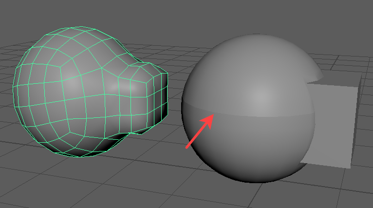
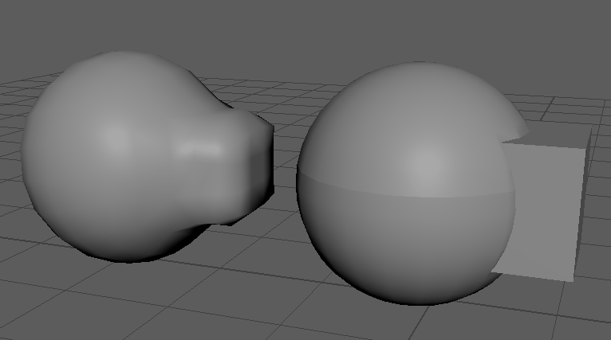
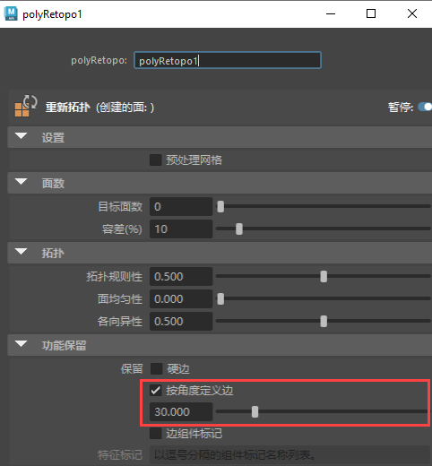
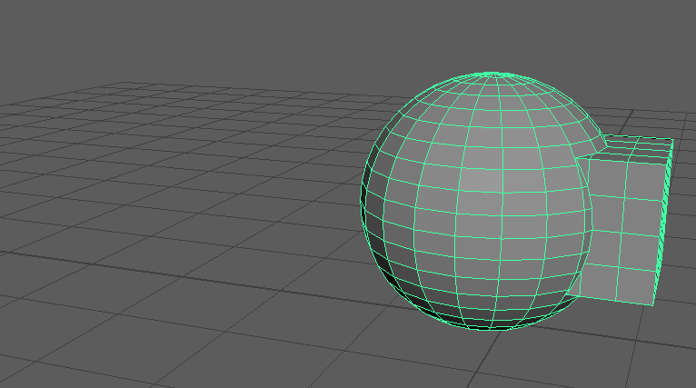

可以通过三种不同的方法保留重新拓扑网格的区域，例如曲面交集、角点或硬边：
- 硬边(Hard Edges)：显式定义的边是硬边，保留这种边并使其保持硬边状态以保留原始网格的大体形状和流
- 按角度保留边(Edges by Angle)：根据指定的角度容差保留边。如果相邻面之间的角度超过指定的角度容差，将保留面之间的边。
- 组件标记(Component Tags)：polyRetopo 节点在输入网格上搜索指定的边组件标记，并在结果网格上将它们用作影响物。
可以在运行重新拓扑之前在重新拓扑选项(Retopologize Options)窗口中启用“特征保留”(Feature Preservation)选项，也可以在运行重新拓扑之后在“属性编辑器 > polyretopo”(Attribute Editor > polyretopo)节点中进行调整。
使用硬边保留网格区域
- 确保要保留的任何边都标记为硬边。
在以下示例中，球体中间附近的循环边已硬化。

- 选择重新拓扑的网格（结果网格），然后在 polyRetopo 节点中启用“硬边”(Hard Edges)（“设置 > 特征保留”(Settings > Feature Preservation)）。
在视口中，硬边保持不变，重新拓扑的网格将自动更新，从而动态更新网格的边流。

使用“按角度保留边”(Edges by Angle)保留网格区域
“按角度保留边”(Edges by Angle)保留根据指定的阈值判断为硬边或软边的对象。以下示例显示了重新拓扑的简单布尔网格。在运行
“重新拓扑”(Retopologize)之前，启用了
“保持原始”(Keep Original)，这样，任何更新都会动态反映在结果网格上。
- 选择重新拓扑的网格（结果网格），然后在 polyRetopo 节点中启用“按角度保留边”(Edges by Angle)（“设置 > 特征保留”(Settings > Feature Preservation)）。

重新拓扑的网格的（结果网格）边流将基于“按角度保留边”(Edges By Angle)值自动更新。
重要： “按角度保留边”(Edges By Angle)特征保留方法会忽略在指定角度容差范围内标记为硬边的任何边。
在以下示例中，使用“网格显示 > 硬边”(Mesh Display > Hard) (1) 将输入网格的所有边标记为硬边。重新拓扑化网格 (2) 后，启用
“按角度保留边”(Edges by Angle) (3) 时，结果网格中不会保留任何显式定义的硬边。
